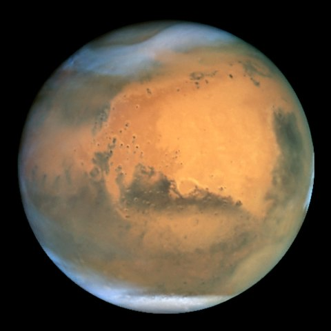
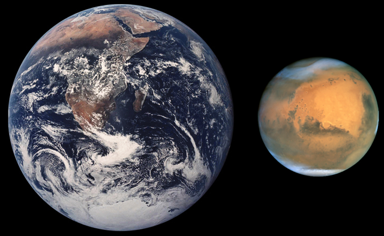
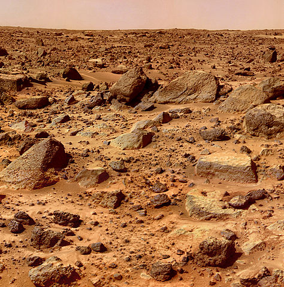
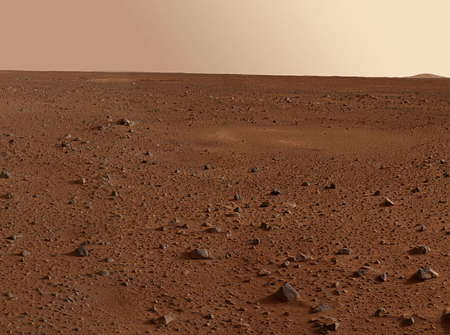
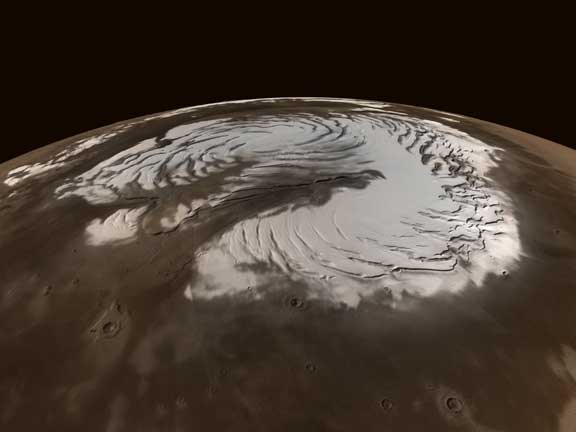
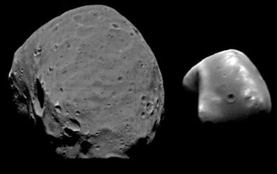

Марс — четверта планета Сонячної системи за відстанню від Сонця та сьома за розміром і масою. Названа на честь Марса — давньоримського бога війни. Іноді Марс називають «червоною планетою» через червонуватий колір поверхні.
Зміст
Загальна характеристика
Марс — планета земного типу з розрідженою атмосферою. На Марсі є метеоритні кратери, як на Місяці, вулкани, долини та пустелі, подібні до земних. Тут розташована гора Олімп (22 456 м), найвища відома гора в Сонячній системі, та Долини Марінера — величезна рифтоподібна система каньйонів. На додаток до особливостей — період обертання Марса та сезонні цикли також подібні до земних.
Марс — невелика планета, більша за Меркурій, але майже вдвічі менша від Землі за діаметром. Марс має екваторіальний радіус 3396 км і середній полярний радіус 3379 км (обидва значення точно визначені космічним апаратом «Mars Global Surveyor», який почав свою місію на орбіті навколо планети 1999 року). Маса Марса становить 6,418× 1023 кг, що вдесятеро менше за масу Землі, а прискорення вільного падіння на його поверхні — 3,72 м/с². Це означає, що обʼєкти на Марсі важать лише третину своєї земної ваги.
Загальна площа поверхні Марса приблизно дорівнює всій площі Земної суші. Це десь — третина всієї площі планети Земля.
Марс має червоний колір, яким він завдячує мінералу маґгеміту — γ-оксиду заліза(III). Через цей колір його іноді називають Червоною планетою. Марс довго асоціювали з війною та кровопролиттям, і тому його назвали на честь римського бога війни. У планети є два супутники, Фобос (грец. φόβος, дос. ««Страх»») і Деймос («Жах»), які були названі на честь двох дітей: Ареса й Афродіти (римські варіанти назв — Марс і Венера відповідно).
Протягом минулого сторіччя Марс посідав особливе місце в популярній культурі. Він служив натхненням для поколінь фантастів. Загадковість планети та багато таємниць залишаються стимулом для наукових досліджень і людської уяви до цього дня.
Орбіта
Орбіта Марса приблизно у 1,5 рази віддаленіша від Сонця, ніж орбіта Землі. Через відносно видовжену орбіту, відстань між Марсом і Сонцем змінюється від 207 млн км у перигелії до 250 млн км в афелії. Тривалість марсіанського року становить 687 земних діб. Марс обертається навколо своєї осі з періодом 24 години 37 хвилин (марсіанську добу називають сол), що лише трохи довше за тривалість доби на Землі.
На Марсі спостерігається також зміна пір року. Через еліптичну орбіту сезони в північній і південній півкулі мають різну тривалість: літо в північній півкулі триває 177 марсіанських діб, а в південній воно на 21 день коротше та на 20 градусів тепліше.
Орбіти Марса та Землі лежать практично в одній площині (кут між ними становить 2°). Вісь обертання Марса нахилена під кутом 25,2° до перпендикуляра до площини орбіти та спрямована у сузір'я Лебедя.
Через кожні 780 діб планети Земля та Марс опиняються на мінімальній відстані одна від одної, яка змінюється між ними від 56 до 401 млн км. Такі зближення планет називають протистояннями. Якщо відстань між планетами менша 60 млн км, то такі протистояння називають великими. Великі протистояння відбуваються кожні 15–17 років.
Фізична характеристика
Марсіанські гірські породи
Згідно з орбітальними спостереженнями й експертизою марсіанських метеоритів, поверхня Марса складається здебільшого з базальту. Деякі докази свідчать, що частина поверхні Марса багатша на кварц, ніж типовий базальт. Більша частина поверхні багата на оксид заліза(III).
Марсіанські породи представлені уламковими пористими породами і еоловими пісками. Густина марсіанських порід на піщаних рівнинах — 1–1,6; на скелястих рівнинах — 1,8 (для порівняння, на Місяці, відповідно: 1–1,3 і 1,5–2,1). Розмір частинок на поверхні планети: 10–100 мкм — від 60 % (піщані рівнини) до 30 % (скелясті рівнини), 100—2000 мкм — відповідно від 10 % до 30 %. Основні компоненти марсіанських порід — залізо (в деяких пробах — до 14 %), кальцій, алюміній, кремній, сірка. Є також стронцій, цирконій, рубідій, титан. Ґрунт Марса, згідно з наявними даними, представлений сумішшю силікатів і мінералів класу оксидів зі значним вмістом сульфатів (можливо, гідратованих). Сірка, очевидно, наявна в сульфатах. Велика кількість червоного пилу з діаметром часточок близько 1 мкм надає поверхні планети червонястого відтінку. Характерна особливість поверхні Марса — наявність кріосфери — льоду Н2О в полярних шапках і в ґрунті. Сучасні дані з марсіанських порід свідчать про існування на Марсі хімічно диференційованої кори, аналогічної земній корі. Марсохід «Curiosity» американського космічного агентства NASA знайшов великі поклади кварцу в марсіанських гірських породах. Також «Curiosity» виявив на поверхні Марсу мінерал тридиміт (SiO2), який, як правило, асоціюється з кремнієвим вулканізмом, відомим на Землі, але це перші ознаки цього явища на сусідній планеті.
Внутрішня будова
У центрі Марса розташоване ядро, діаметром близько 2968 кілометрів, яке складається здебільшого з заліза із вмістом сірки близько 14—17 %. Ядро перебуває в рідкому стані й має вдвічі більшу концентрацію легких елементів, ніж ядро Землі. Ядро оточене мантією з силікатів, яка сформувала багато тектонічних і вулканічних особливостей на планеті, але зараз вже не діє. Середня товщина кори планети — близько 50 км, максимальна товщина — 125 км.
Геологічна історія
Планетологічну історію Марса поділяють на донойський час та три періоди: нойський, гесперійський та амазонський.
- Донойський час: від утворення Марса до 4,18–4,08 млрд років тому. Тоді Марс мав магнітне поле. Наприкінці того часу зʼявилися низовини північної полярної області.
- Нойський період: від 4,18–4,08 до 3,74–3,50 млрд років тому. Поділений на 3 епохи (ранньонойську, середньонойську та пізньонойську). На початку періоду відбувалося інтенсивне астероїдне бомбардування; з'явилися басейни рівнин Еллада та Аргір. Пізніше розпочався ріст вулканічного нагір'я Фарсида. Інтенсивно формувалися річкові долини.
- Гесперійський період: від 3,74–3,50 до 3,46–2,0 млрд років тому. Поділений на 2 епохи. На початку періоду йшло активне рифтоутворення в долинах Марінера та лабіринті Ночі. Тривали вулканічні виверження (зокрема, на нагір'ї Елізій). З'явилися річкові русла, що впадають у рівнину Хриса.
- Амазонський період: від 3,46–2,0 млрд років тому до сьогодні. Поділений на 3 епохи. На початку періоду — інтенсивне заповнення осадами північних низовин, а наприкінці — утворення шаруватих відкладень у полярних областях. Протягом більшої частини періоду тривали виверження вулканів Фарсиди та Елізія.
Температурний режим та атмосфера
Через більшу віддаленість від Сонця Марс отримує на 57 % менше енергії, ніж Земля. Середньорічна температура там −60 °С. Температура поверхні протягом доби істотно змінюється. Наприклад, у південній півкулі на широті 50 градусів температура в середині осені змінюється від −18 °C (опівдні) до −63 °C (увечері). Однак на глибині 25 м під поверхнею температура практично постійна −60 °C і не залежить від сезону. Максимальні значення температури поверхні не перевищують декількох градусів вище 0 °C, а мінімальні значення, зареєстровані на північній полярній шапці, — −138 °C. Температура на Південному полюсі опускається до −130 °C.
Атмосфера Марса досить розріджена. Атмосферний тиск на поверхні змінюється від 0,3 мбар (на горі Олімп) до 12 мбар, із середнім тиском на поверхні близько 6,1 мбар. Це в 160 разів менше тиску на рівні моря нашої планети (1 бар). Висота однорідної атмосфери становить близько 11 км, вона більша, ніж на Землі (8 км) через нижчу гравітацію.
Атмосфера на Марсі складається з 95 % вуглекислого газу, 3 % азоту, 1,6 % аргону й містить сліди кисню, метану й води. Атмосфера дуже запилена через велику кількість мікрочастинок близько 1,5 µm у діаметрі, які надають марсіанському небу рудувато-коричневого відтінку, якщо дивитися з поверхні планети. Активні природні явища в атмосфері — густі тумани або пилові бурі.
Рельєф
Для поверхні Марса характерна глобальна асиметрія в розподілі знижених ділянок — рівнин, що складають 35 % усієї поверхні, і піднесених, вкритих безліччю кратерів районів. Значна частина рівнин розташована в північній півкулі. Межа між ними в деяких випадках представлена особливим типом рельєфу — столовими горами, складеними плосковершинними гірками й хребтами.
Марс має різні полярні крижані шапки, але Марс також має пояси льодовиків в центральних широтах як у південних так і північних півкулях. Товстий шар пилу покриває льодовики, що складаються з замерзлої води. Вчені підрахували, що лід у льодовиках містить більш ніж 150 мільярдів кубічних метрів льоду — така кількість льоду може покривати всю поверхню Марса шаром в 1,1 метрів, тому лід на середніх широтах важлива частина водосховища Марса. Цей лід не випаровується в простір, бо захищений товстим шаром пилу.
Вчені зі Смітсонівського інституту в США визначили, що озера і моря на Марсі існували помітно довше, ніж передбачалося спочатку. В цілому цей період збільшився на 1 млрд років. Тобто вологий період на планеті існував на цілий 1 млрд років довше, ніж це вважалося раніше.
Льодові утворення
Полярні шапки Марса багатошарові. Нижній, основний шар товщиною в кілька кілометрів утворений звичайним водяним льодом, змішаним з пилом. Це постійні шапки, що зберігається й у літній період. Сезонні зміни полярних шапок, що спостерігаються, відбуваються за рахунок верхнього шару товщиною менше 1 метра, що складається з твердої вуглекислоти, так званого «сухого льоду».
Площа, вкрита цим шаром, інтенсивно збільшується в зимовий період, досягаючи паралелі 50 градусів, а іноді й долаючи цю межу. Навесні, із підвищенням температури, цей шар випаровується й залишається лише постійна шапка. Хвиля потемніння ділянок поверхні, що спостерігається зі зміною сезонів, пояснюється зміною напрямку вітрів, що постійно дмуть у напрямку від одного полюса до іншого. Вітер здуває верхній шар сипучого матеріалу — світлий пил, оголюючи ділянки темніших порід. У періоди, коли Марс проходить перигелій, рівновага марсіанського середовища порушується. Вітер підсилюється до 69 км/год, починаються бурі. Більше мільярда тонн пилу піднімається й утримується в зваженому стані, різко змінюючи кліматичний стан всієї марсіанської кулі. Тривалість пилових вітрів іноді досягає 50 — 100 діб. Під час пилових буревіїв на Марсі виникає так званий «антипарниковий ефект», коли хмари пилу не пропускають сонячне випромінювання до поверхні, але пропускають теплове випромінювання, що іде від неї, тому поверхня сильно охолоджується, а атмосфера розігрівається.
Уточнення космічними апаратами складу атмосфери дало змогу виявити роль полярних шапок у формуванні буревіїв. Під час танення полярних шапок утворюються величезні маси вуглекислого газу й збільшується тиск над ними, внаслідок чого виникають потужні вітри, що піднімають з поверхні дрібні частки ґрунту.
Супутники Марса
Першим передбачив, що Марс має супутники, Йоганн Кеплер 1610 року. У спробах розшифрувати анаграму Галілея про кільця Сатурна («Найвищу планету потрійною спостерігаю») Кеплер вирішив, що Галілей виявив супутники Марса. 1643 року монах-капуцин Антон Марія Ширл стверджував, що бачив «марсіанські місяці». 1727 р. Джонатан Свіфт у «Мандрах Гуллівера» описав два маленьких супутники Марса, які були відомі астрономам острова Лапута. Вони оберталися навколо Марса за 10 і 21,5 годин. Про ці ж супутники 1750 року згадав Вольтер у романі «Мікромегас». 10 липня 1744 року німецький капітан Кіндерман повідомив, що обчислив орбітальний період марсіанського супутника, котрий дорівнював 59 годинам 50 хвилинам і 6 секундам. 1877 року американський астроном Асаф Холл, працюючи у військово-морській обсерваторії США з найбільшим у країні 26-дюймовим рефрактором Кларка, нарешті знайшов Фобос та Деймос, два маленьких супутники Марса. Їх орбітальні періоди виявились близькими до періодів, які запропонував Свіфт на 150 років раніше.
До другої половини XX століття про два супутники Марса Фобос і Деймос було відомо небагато. Потім їх спостерігали орбітальні космічні апарати: «Вікінг-1» пролетів на відстані 100 км від поверхні Фобоса, а «Вікінг-2» — на відстані 30 км від Деймоса.
Фобос робить повний оберт навколо Марса за 7 годин 39 хвилин. Супутник перебуває на відстані 6000 кілометрів від поверхні планети. Це ближче межі Роша, і без внутрішнього опору супутник було б розірвано на частини припливними силами. Ці сили також сповільнюють рух Фобоса і, можливо, призведуть до зіткнення супутника з Марсом менше, ніж через 100 мільйонів років. Деймос розташований на віддаленішій орбіті, і припливні сили зумовлюють подальше віддалення від планети. Фобос і Деймос видно на Марсі не з усіх місць через їх невеликі розміри, близькість до планети й приекваторіальні орбіти.
Обидва супутники — шматки гірської породи неправильної, приблизно еліпсоїдальної форми. Нерівна поверхня Фобоса повністю вкрита метеоритними кратерами. Найбільший кратер Стікні охоплює значну частину супутника. Його поверхня також вкрита системою лінійних переломів, або заглиблень, багато з яких геометрично пов'язані з кратером Стікні. Поверхня Деймоса, навпаки, здається гладенькою, бо багато кратерів майже повністю вкрито уламками порід.